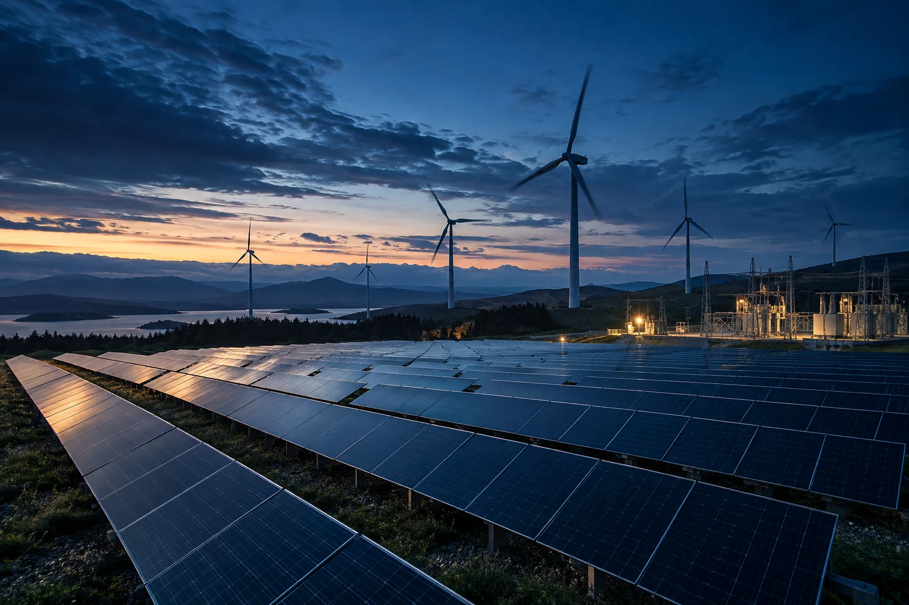

Energy lost
along the way.
Electricity can be lost along the distribution network. Better measurements help engineers understand where energy is going.
TOPIC 9 / BIG DATA ANALYTICS
Data-Driven Power Distribution Optimization
A study of how grid data can help anticipate demand
and make room for renewable energy.
01 / THE CHALLENGE
Variable solar and wind generation meet changing electricity demand. The case study asks how a grid can respond with better information.
Electricity can be lost along the distribution network. Better measurements help engineers understand where energy is going.
Solar and wind output vary. Forecasting and flexible dispatch are proposed to manage this uncertainty and reduce curtailment.
Meter readings, weather feeds and legacy control systems can remain isolated. Delayed insight makes grid response harder.
A grid has to balance changing demand with available generation. Adding more meters produces more data to process, while older systems can be difficult to connect.
Useful forecasts depend on good data and timely updates. Household consumption also needs privacy protection, and connected equipment needs safeguards against cyberattacks.
02 / THE PROPOSED SOLUTION
Connect observations to forecasts. Connect forecasts to dispatch. The proposed approach uses Big Data Analytics to support a more adaptive electricity network.
FROM MEASUREMENT TO INSIGHT
Smart meters and grid sensors contribute consumption and operating data. Weather feeds add context for renewable generation.
Meter readings at 15-minute intervals reveal consumption patterns. Phasor measurement units can provide a faster view of grid conditions at 60 samples per second.
Follow the dataThis project explores a proposed approach to forecasting and adaptive grid control. The interactive examples on this page explain the concepts with illustrative scenarios and synthetic data.
03 / HOW IT WORKS
From a meter reading to a distribution decision. Explore the detailed data pipeline or the adaptive-control concept, then select a component to learn what it does.
Proposed system · select a component to explore its role
SELECTED COMPONENT
A simplified view of two-way electrical flow. Blue connections above represent information and decisions, while this green path represents power.
Electricity travels through physical grid equipment. Data travels through communication systems: meter readings, sensor events and weather observations become inputs for analysis.
The data pipeline processes these inputs and forecasts demand. The adaptive-control concept proposes using forecasts to coordinate routing, battery activation and demand-response signals. A control decision still needs safe, compatible grid equipment to act on it.
Federated learning, differential privacy, graph neural networks and digital twins are additional proposed research directions. Their role is to improve privacy, represent network relationships and test decisions safely.
04 / TECHNOLOGIES & METHOD
A proposed stack for processing energy data at scale. Each stage helps turn raw readings into information that supports grid decisions.
Proposed technology stackKafka ingests streams. HDFS and HBase support storage, with InfluxDB for time-series data. MQTT supports communication from connected devices.
Potential data inputs include smart-meter consumption histories, weather observations, and solar and wind generation records. Dataset options identified for this project include UKPN smart-meter data, Pecan Street Dataport and NREL generation data.
Hardware described: DLMS/COSEM smart meters, PMUs at 60 samples/sec, SCADA and EMS. Proposed Raspberry Pi edge nodes pre-aggregate readings.
Spark supports batch and stream analytics. LSTM and XGBoost are proposed for demand forecasting, with Isolation Forest for unusual consumption patterns.
LSTM learns patterns over time. XGBoost is proposed for short-term predictions. A further forecasting approach combines LSTM with a Transformer, using PyTorch. Scikit-learn supports preprocessing, while RLlib supports the proposed reinforcement-learning control concept.
Spark MLlib and Flink support analysis at scale. Before any forecast is trusted, missing readings and noisy data need attention, and the model needs evaluation on observations it has not seen during training.
The evaluation plan names MAPE and RMSE for forecasts, F1-score and AUC-ROC for anomalies, plus energy savings in kWh and CO₂ reduction in tons/year.
AWS IoT Greengrass supports edge processing. Docker and Kubernetes support deployment, Grafana with InfluxDB supports monitoring, and Airflow schedules processing jobs. Power BI can summarize findings for decision-makers.
SCADA / EMS integration and automatic dispatch are proposed control mechanisms. The website does not connect to any grid, dashboard or trained model.

05 / INTENDED APPLICATIONS
Forecasting and adaptive dispatch aim to use more available solar and wind power while responding to changing demand.
Intended applications · forecasting, monitoring and adaptive distribution
06 / EVERYDAY USE CASES
Explore familiar situations to see why sensing, forecasting and flexible demand can help. These are illustrative examples of intended uses.
07 / UNDERSTANDING THE BENEFITS
The project aims to improve efficiency, reliability and renewable use. Each goal needs a different measurement to establish whether a system actually helps.
Compare predicted demand with actual demand. MAPE describes percentage error, while RMSE helps assess the size of prediction errors.
Track fault-detection time, outage duration and restoration time. Detecting an event quickly and restoring electricity are separate steps.
Measure unused renewable generation, energy savings in kWh and emissions reduction in tons/year. Moving demand to another time does not remove its energy requirement.
Forecasts need testing on unseen data. Anomaly detection needs checks for both missed events and false alarms, using measures such as F1-score and AUC-ROC.
The project’s quantitative outcomes have not been independently validated here. The demonstration below teaches a simple balance using synthetic values, rather than claiming measured savings or prediction accuracy.
08 / EXPLORE THE BALANCE
Try a simple energy balance for one imagined hour. Adjust demand, renewable availability and the share of demand moved to a later hour.
CONVENTIONAL SUPPLY NEEDED
30MW
Renewables cover 67% of demand in this hour.
This website-only demonstration is a lossless, instantaneous balance. It has no battery model, transmission constraints, ramp limits, weather model or trained AI. It does not measure live grid data or validate project performance.
Demand after shifting = demand × (1 − shift / 100). Renewable power used = the smaller of renewable availability and adjusted demand. Conventional supply = the remaining demand, with a minimum of zero. Surplus = unused renewable availability. Deferred energy = shifted power × one hour, in MWh. Deferred demand still needs to be served later.
09 / LIMITATIONS & FUTURE SCOPE
The proposed approach depends on trustworthy data, interoperable systems and safe control. Those challenges remain part of the research.
Scaling meter streams, integrating older systems, managing renewable uncertainty, protecting household privacy and resisting cyberattacks.
Compute costs, missing readings and noisy data can limit the approach. A model that works for homes may need retraining before it can serve commercial or industrial loads.
Federated learning across utilities, digital twins for testing, and blockchain-based peer-to-peer energy trading. Further ideas combine digital twins with reinforcement learning for self-healing and use vehicle-to-grid analytics to explore EV batteries as storage.
These capabilities remain proposed research directions and future improvements.
Further research could explore quantum computing for large-scale optimization, real-time carbon tracking and AI directly on substation hardware. These are future directions, not demonstrated features.
THE PROJECT
PRESENTED BY
M.Tech Data Science (2025–2027)
GITAM University, Hyderabad
Big Data Analytics · Smart Energy Grids & Sustainability
An educational exploration of data-driven power distribution. Images are original AI-generated concept illustrations. Examples explain intended uses and do not represent completed installations.